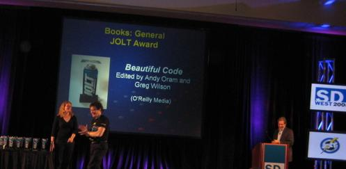

Beautiful Code Wins Jolt Award
Dr. Dobb’s Journal has announced the winners of the 18th annual Jolt Product Excellence and Productivity Awards at the SD West 2008 conference. The Jolt Awards recognize those products, books, and websites that have “jolted” the industry in past year. Winners are selected by a panel of judges consisting of industry insiders, columnists, and technology leaders. This year’s winners are:
- General Books: Beautiful Code, edited by Andy Oram and Greg Wilson (O'Reilly Media)—w00t! (Announcement is finally up on the Beautiful Code site.)
- Technical Books: Continuous Integration: Improving Software Quality and Reducing Risk by Paul Duvall, Steve Matyas, Andrew Glover (Addison-Wesley Professional)
- Change and Configuration Management: FishEye (Atlassian)
- Collaboration Tools: Code Collaborator (Smart Bear)
- Database Engines and Data Tools: AquaLogic Data Services Platform (BEA Systems)
- Design and Modeling Tools: Corticon Business Rules Modeling Studio (Corticon Technologies)
- Development Environments: NetBeans IDE 6 (Sun Microsystems)
- Enterprise Tools: Kapow Mashup Server, Web 2.0 Edition (Kapow Technologies)
- Libraries, Frameworks and Components: Guice (Google)
- Mobile Development Tools: Mojax (mFoundry)
- Project Management Tools: Rally Enterprise (Rally Software Development)
- Security Tools: Fortify Defender: Real-Time Analyzer (Fortify Software)
- Testing Tools: Clover 2.0 (Atlassian)
- Utilities: VMware Workstation (VMware)
- Web Development: Adobe ColdFusion 8 (Adobe Systems)
- Websites and Developer Networks: O'Reilly Radar (O'Reilly Media)
- Jolt Hall of Fame Winner: VMware Workstation
My thanks again to everyone who contributed to the book (especially Andy O.) I think Frank would have been proud of us…
And here’s a picture of Andy Oram accepting the award from Amber Ankerholz while Robert X. Cringely looks on:
